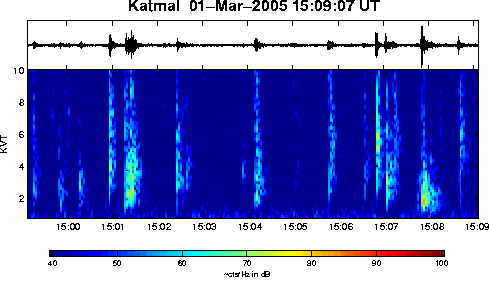
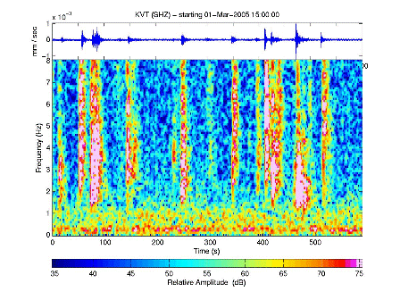
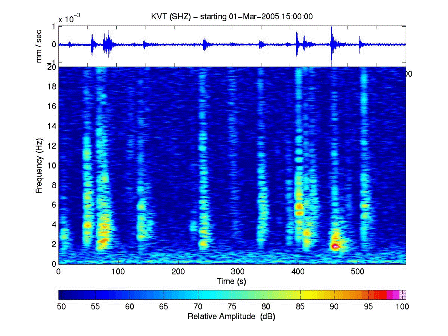
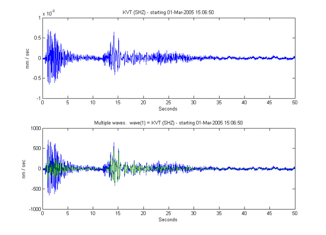

Below, I'll have examples. The BOLD computer
input are things that I typed, and the other computer-type
is what the computer spit out. sometimes you'll see '>>',
which is the MATLAB command prompt... don't type that in. %Italics
are comments...
Now, because (on this computer) I almost always access the data through our
Antelope database of continuous traces, I have a datasource pre-defined
in a matlab script (common_datasources.m). This script can either be loaded at startup
via startup.m, can be loaded at any time through load(common_datasources.m)
, or can be called within any function that requires database access.
%% define commonly used datasources
% antelope continuous waveform database
ds_antelope = datasource('antelope',...
'/iwrun/op/db/archive/archive_%04d/archive_%04d_%02d_%02d',...
'year','year','month','day');
% collection of unprocessed waveforms, stored locally as .mat files
ds_rawfiles = datasource('file',...
'/home/celso/okmokraw/%04d/%02d/OkmokRaw_%04d_%02d_%02d_%s.mat',...
'year','month','year','month','day','station');
% a winston server (not currently available)
ds_winston = datasource('winston','mylocalwaveserver.giseis.alaska.edu',12345);
%% predefine the Okmok stations used for my raw files
% All these definitions may be overkill, but I use them A LOT!!
OKsta.sp.ehz = scnlobject ({'OKAK','OKCF','OKER','OKRE','OKSP','OKTU','OKWE','OKWR'},'EHZ','AV');
OKsta.sp.shz = set(OKsta.sp.ehz,'channel','SHZ');
OKsta.bb.hz = scnlobject({'OKCE','OKSO','OKFG','OKCD'},'BHZ','AV');
OKsta.bb.hn = set(OKsta.bb.hz,'channel','BHN');
OKsta.bb.he = set(OKsta.bb.hz,'channel','BHE');
OKsta.bb.all = [OKsta.bb.hz, OKsta.bb.hn, OKsta.bb.he];
OKsta.all.current = [OKsta.sp.ehz, OKsta.bb.all];
OKsta.all.oldstyle = [OKsta.sp.shz, OKsta.bb.all];
I just checked the seismology log, and see Tanja's note:
Katmai: another swarm of very local events on station KVT ("atmospheric events"?) lasting about 6 hrs; see attached example.

Curious. I want to take a closer look at these events... therefore, I start MATLAB...
Since I have a valid datasource, I can just use that.
I don't have
a scnlobject for this station, so I'll create that:
kvt = scnlobject('KVT','SHZ')
kvt = station: KVT channel: SHZ network: -- location: --
Now, I'll load the waveform from the antleope database
w = waveform(ds_antelope,kvt,'3/1/2005 15:00:00','3/1/2005 15:10:00');
Then I have a waveform as follows:
w =
station: KVT network: AV
channel: SHZ location: --
start: 01-Mar-2005 15:00:00.010
duration(00:10:00.000)
data: 60000 samples
freq: 100.000000 Hz
units: nm / sec
With misc fields...
* HISTORY: [10x2] cell object
* NET: -
* CALIBRATION_APPLIED: YES
* CALIB: 5.491
I plot it up...
plot(w)
hmm... OK. so? Let me get the spectra on that using the default spectral object.
specgram2(spectralobject,w);

Hmm. energy everywhere, and the events have energy into higher bands. Let me try to get a better frequency content by using a higher nfft. I'll also smooth the picture out by taking spectral samples every 1/2 second. Oh, and I also want to both look into higher frequencies and limit the dB range to reign in the saturated portion of the spectra.
I accomplish this by defining a specific spectralobject:
s = spectralobject(2048,1998,10,[50 100])
s =
nfft: 2048
over: 1998
freqmax: 10
dBlims: [50 100]
lets generate another spectrogram.
specgram2(s,w,0)

Energy still goes off the displayed spectrum, so I want to try again, this time with a much higher frequencyMax (20).
specgram2(set(s,'freqmax',20), w, 0)

The zero that trails the above command tells specgram to reuse the entire plot window. Otherwise it jams the spectrogram into the currently active axis. (Try it without the zero, and you'll see what I mean). Without the zero, you can create more complicated figures (here is just an ugly example of a subplot ).
speaking of subplots, Lets take a closer look at one of the events. Here are a few consecutive commands...
>>w2 = waveform(ds_antelope,kvt,'3/1/2005 15:06:40', '3/1/2005 15:07:30')
w2 =
station: KVT network: AV
channel: SHZ location: --
start: 01-Mar-2005 15:06:40.010
duration(00:00:50.000)
data: 5000 samples
freq: 100.000000 Hz
units: nm / sec
With misc fields...
* HISTORY: [10x2] cell object
* NET: -
* CALIBRATION_APPLIED: YES
* CALIB: 5.491
>>figure % create a new figure for plotting>>subplot(2,1,1) % divide the plot into two rows, one column, use the top one.>>plot(w2) %plot my raw waveform>>f = filterobject %create a default filterobjectf = type: B (Bandpass) cutoff: 0.8 5 Hz poles: 2 >>filteredwave = filtfilt(f,w2) %filter the w2 waveform with the above filterfilteredwave = station: KVT network: AV channel: SHZ location: -- start: 01-Mar-2005 15:06:40.010 duration(00:00:50.000) data: 5000 samples freq: 100.000000 Hz units: nm / sec With misc fields... * HISTORY: [11x2] cell object * NET: - * CALIBRATION_APPLIED: YES * CALIB: 5.491 >>bothwaves = [w2 filteredwave] % create a vector w/ both unfiltered and filtered waveformsbothwaves = [1x2] waveform object with fields: station channel start freq data units with common fields... 'CALIB' 'CALIBRATION_APPLIED' 'HISTORY' 'NET' >>subplot(2,1,2) % activate the second (bottom) plot area>>plot(bothwaves,'nm') % plot the two waves on the same axis, with a different scale

From the bottom plot, I can see that the second arrival (at about 14 seconds) has more energy in the 0.8 to 5.0 hz range.
Here endeth the demo. for more information, feel free to contact me.
Cheers!
- Celso
{kind=link}